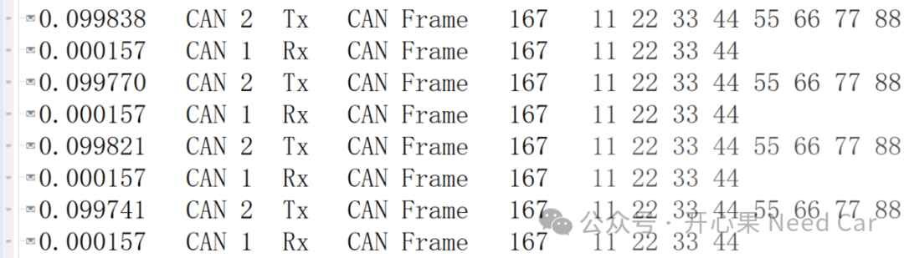

说起硬件路由，其实算不上新的技术突破，只是在汽车MCU级的芯片中少见而已，在SOC的芯片中，算是标配的存在。比如：芯驰的G9系列，就配有CAN、LIN、Ethernet硬件路由加速器。随着车规级MCU芯片的发展，各种软/硬功能不断的"复用"进来，所以，作为汽车人，得不断地补充知识，接纳“新技术”。本文，聚焦一下TC4xx的CRE（CAN Routing Engine）功能，注意，不是DRE（Data Routing Engine），DRE后面再聊。简单说，CRE就是不同CAN网段之间的数据路由。所以，如果一个控制器需要CAN路由，也就意味着这个控制器至少包含两路CAN。CAN路由示意如下：没有CRE之前，如果要实现报文之间的路由，则需要软件实现，如果使用Autosar架构，往往会通过PduR模块实现PDU级别的路由。CRE路由分为内部路由和外部路由。什么是内部路由呢？我们知道：CAN模块可以包含多个Group（eg：4个），每个Group又可以包含多个CAN Node。对于Group内的CAN数据路由称为内部路由（Internal Routing），不同Group节点之间的数据路由称为外部路由（external Routing）。当然，某个CAN节点与内存之间的路由，CAN<->Ethernet之间的路由也称为外部路由。
CRE内部路由可以直接路由，走的路径相对短，即：Nx Rx FIFO 0/1接收到的数据，根据路由表的路由配置，通过Receive Interface内部路由，再由发送接口（Transmit Interface）发送到Nx Tx FIFO或者Queue，之后数据发送到总线，示意如下：如果要实现CRE的路由，必须确保参与路由节点的路由功能均使能。其中，如果仅仅使用CRE的内部路由，可以不使能DRE。CAN的内部路由性能测试如下：
如上图，CAN2发给控制器的数据通过CAN1路由出来，两者的时间差在us级别，相比于软件实现，可以说，做到了时时性。
当然，路由的时候还可以改变CAN ID，比如：控制器从CAN2收到0x167，转发到CAN 1时修改成0x166，示意如下：（二）DLC的路由修改
控制器从CAN2收到0x167，DLC = 8，转发到CAN 1时，DLC修改成4，示意如下：

除此之外，路由时还可以修改报文类型，即：经典CAN和CAN FD之间的转换。但是，这些功能如何运用到我们的实际项目，能否解决实际的工程问题，还需要实践检验。
点击下方关注，一起聊聊Autosar/嵌入式，如果需要，联系作者进群，给你更专业的解答